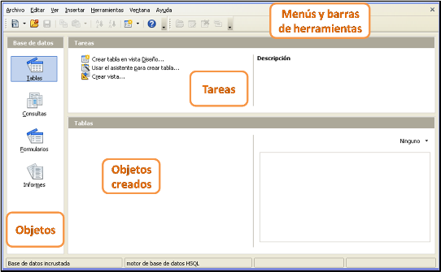

Tecnología de la Información y la Comunicación: Bases de datos
2.3. Entorno de trabajo
Para trabajar con un gestor de base de datos, debemos "cambiar el chip". Un editor de textos, un programa de presentaciones o una hoja de cálculo, usan herramientas de formato y edición similares.
Sin embargo, la gestión de bases de datos es completamente distinta y usa elementos nuevos que poco tienen que ver con los anteriores. Aún así, es posible exportar datos al editor de textos (direcciones para correo) o a la hoja de cálculo (datos numéricos).
Una vez que hemos entrado en el programa, vamos a conocer el entorno de trabajo.

Entorno de trabajo en Base
La pantalla se divide en cuatro zonas bien diferenciadas:
- Menús desplegables y barras de herramientas.- sus funciones son las mismas que en el resto de programas, aunque incluye barras nuevas y algunos iconos específicos.
- Objetos.- permite seleccionar el tipo de objetos con el que vamos a trabajar.
- Objetos creados.- es la lista de elementos creados en cada base de datos.
- Tareas.- son las opciones de trabajo que OOo Base ofrece con cada elemento. El programa ofrece una breve descripción de la tarea en la parte de la derecha.
Comprueba lo aprendido
Relaciona las siguientes acciones con el icono de la barra de herramientas que las lanza.
- Crear un nuevo archivo de OpenOffice.org (Writer, Calc, Impress).
- Ordenar alfabéticamente los objetos creados.
- Crear un nuevo objeto (consulta, formulario, informe).
- Acciones con un objeto (abrir, editar, borrar).
Importante
Se denomina objeto a cada elemento de la base de datos. En las bases de datos relacionales los objetos son: tablas, consultas, formularios e informes.
Cada objeto tiene una función en la base de datos:
- Las tablas son los elementos que almacenan la información y el resto son los elementos que permiten manipular dicha información.
- Mediante las consultas se puede seleccionar parte de la información y guardarla en forma de tabla.
- Mediante los formularios se puede mostrar en pantalla para introducción de datos o para consulta de éstos.
- Mediante los informes se obtienen documentos de texto para exportar o imprimir la información maquetada.
Comprueba lo aprendido
¿Qué objeto es cada imagen? (escribe en mayúsculas)